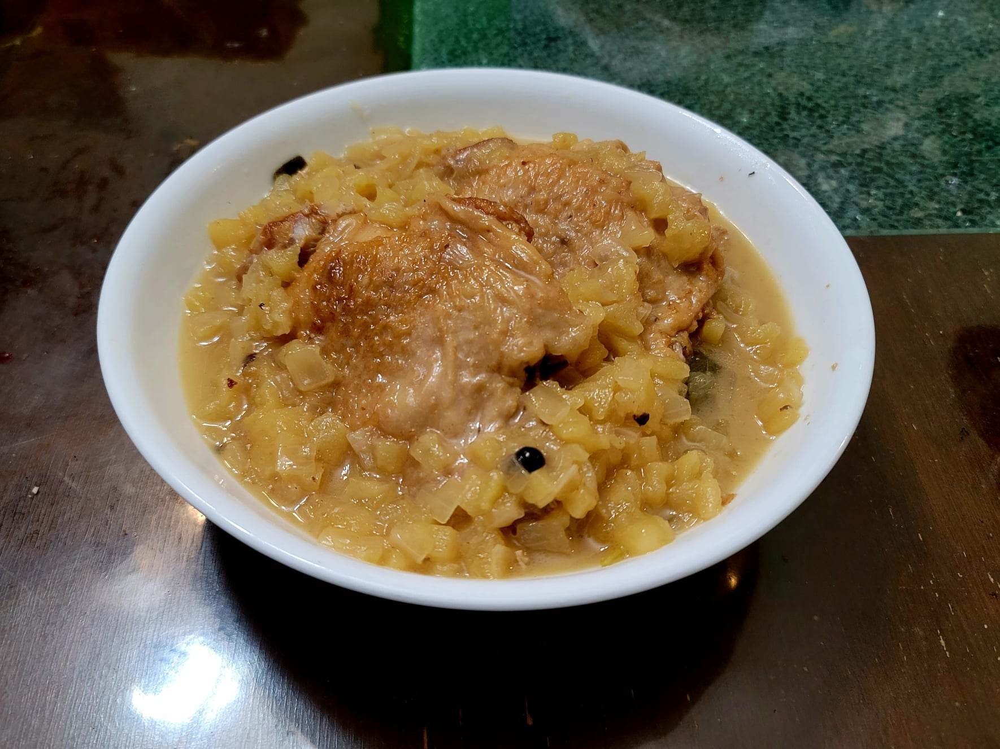

Cider-Braised Turkey Thighs

Ingredients:
- 2-3 lb Turkey thighs
- 3 tbsp Sunflower oil
- 1 cup Wild onion, chopped
- 1 cup Corn stock, Wild rice stock, or Turkey stock
- 1/2 cup Apple cider
- 1/4 cup Maple vinegar or Apple cider vinegar
- 2 Juniper berries
- 4 Sage leaves
- 3-4 Crabapples or 1 large Apple, peeled, cored, and diced
- Smoked salt, to taste
Instructions:
- Heat the oil in a large pot over medium-high heat. Add the turkey thighs and let brown for about 3 minutes per side. Then remove from the pot and reserve.
- Add in the onions cook until softened, about 5-7 minutes. Then add in the stock and cider and stir, making sure to scrape any brown bits from the bottom of the pan. Add back in the thighs along with the rest of the ingredients and bring to a boil. Then reduce to a simmer. Let cook, covered, for about 45 minutes, turning occasionally.
- Remove the turkey from the pot and reserve. Bring the pot back to a boil and cook, stirring often, until the liquid has reduced by about half. Taste and season as needed.
- Return the turkey back to the pot and let return to heat. Serve hot with wild rice, mashed sweet potatoes or maple squash, or corn cakes.